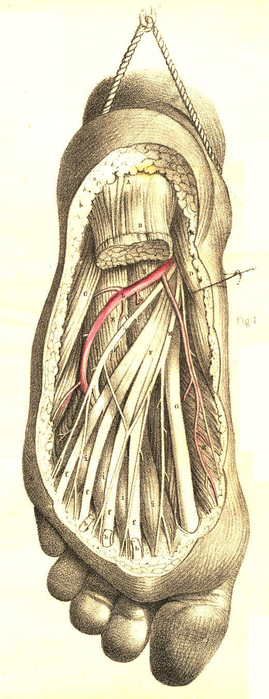

SURGICAL ANATOMY by JOSEPH MACLISE
COMMENTARY ON PLATES 67 & 68.
THE SURGICAL DISSECTION OF THE ANTERIOR CRURAL REGION,
THE ANKLES, AND THE FOOT.
Beneath the integuments and subcutaneous adipose tissue on the fore part
of the leg and foot, the fascia H H, Plate 67, Figure 2, is to be seen
stretched over the muscles and sending processes between them, thus
encasing each of these in a special sheath.
The fascia is here of considerable density. It is attached on the inner
side of the leg to the spine of the tibia, D, Plate 67, Figure 2, and on
the outer side it passes over the peronaeal muscles to those forming the
calf. Between the extensor communis digitorum, B b, and the peronaeus
longus, F, it sends in a strong process to be attached to the fibula, E.
In front of the ankle joint, the fascia is increased in density,
constituting a band (anterior annular ligament) which extends between
the malleoli, forms sheaths for the several extensor tendons, and binds
these down in front of the joint. From the lower border of the annular
ligament, the fascia is continued over the dorsum of the foot, forming
sheaths for the tendons and muscles of this part. Behind the inner
malleolus, d, Plate 67,
Figure 1, the fascia attached to this process
and to the inner side of the os calcis appears as the internal annular
ligament, which being broad and strong, forms a kind of arch, beneath
which in special sheaths the flexor tendons, and the posterior tibial
vessel and nerve, pass to the sole of the foot. On tracing the fascia
from the front to the back of the leg, it will be seen to divide into
two layers--superficial and deep; the former passes over the muscles of
the calf and their common tendon (tendo Achillis) to which it adheres,
while the latter passes between these muscles and the deep flexors. The
deep layer is that which immediately overlies the posterior tibial and
peronaeal vessels and nerves. While exposing the fascia on the forepart
of the leg and dorsum of the foot, we meet with the musculo-cutaneous
branch of the peronaeal nerve, which pierces the fascia at about the
middle of the limb, and descends superficially in a direction between
the fibula, and the extensor longus digitorum muscle, and after dividing
into branches a little above the outer ankle, these traverse in two
groups the dorsum of the foot, to be distributed to the integuments of
the five toes. On the inner side of the tibia, D, Plate 67, Figure 1,
will be seen the internal or long saphena vein, B B, which commencing by
numerous branches on the dorsal surface of the foot ascends in front of
the inner ankle, d, to gain
the inner side of the leg, after which it
ascends behind the inner side of the knee and thigh, till it terminates
at the saphenous opening, where it joins the femoral vein. In its course
along the lower part of the thigh, the leg and the foot, this vein is
closely accompanied by the long saphenous nerve, derived from the
anterior crural, and also by a group of lymphatics.
By removing the fascia from the front of the leg and foot, we expose the
several muscles and tendons which are situated in these parts. In the
upper part of the leg the tibialis anticus, A, Plate 67, Figure 2, and
extensor-communis muscle, B, are adherent to the fascia which covers
them, and to the intermuscular septum which divides them. In the lower
part of the leg where these muscles and the extensor pollicis, C,
terminate in tendons, a b c,
they are readily separable from one
another. The tibialis anticus lies along the outer side of the tibia,
from which, and from the head of the fibula and interosseous ligament,
it arises tendinous and fleshy. This muscle is superficial in its whole
length; its tendon commencing about the middle of the leg, passes in a
separate loose sheath of the annular ligament in front of the inner
ankle, to be inserted into the inner side of the cuneiform bone and base
of the metatarsal bone of the great toe. The extensor communis digitorum
lies close to the outer side of the anterior tibial muscle, and arises
from the upper three-fourths of the fibula, from the interosseous
ligament and intermuscular septum. At the lower part of the leg, this
muscle ends in three or four flat tendons, which pass through a ring of
the annular ligament, and extending forwards, b b b b, over the dorsum
of the foot, become inserted into the four outer toes. The peronaeus
tertius or anterior, is that part of the common extensor muscle which is
inserted into the base of the fifth metatarsal bone. On separating the
anterior tibial and common extensor muscles, we find the extensor
pollicis, C c, which,
concealed between the two, arises from the middle
of the fibula, and the interosseous ligament; its tendon passes beneath
the annular ligament in front of the ankle joint, and after traversing
the inner part of the dorsum of the foot, becomes inserted into the
three phalanges of the great toe. Beneath the tendons of the extensor
communis on the instep, will be seen the extensor digitorum brevis, K K,
lying in an oblique direction, between the upper and outer part of the
os calcis, from which it arises, and the four inner toes, into each of
which it is inserted by a small flat tendon, which joins the
corresponding tendon of the long common extensor.
The anterior tibial artery, L, Plate 67, Figure 2, extends from the
upper part of the interosseous ligament which it perforates, to the bend
of the ankle, whence it is continued over the dorsum of the foot. In the
upper third of the leg, the anterior tibial artery lies deeply situated
between the tibialis anticus, and flexor communis muscles. Here it will
be found, close in front of the interosseous ligament, at about an inch
and-a-half in depth from the anterior surface, and removed from the
spine of the tibia at an interval equal to the width of the tibialis
anticus muscle. In its course down the leg, the vessel passes obliquely
from a point close to the inner side of the neck of the fibula, to
midway between the ankles. In its descent, it becomes gradually more
superficial. In the middle of the leg, the vessel passes between the
extensor longus pollicis, and the tibialis anticus muscles. Above,
beneath, and below the annular ligament, this artery will be found to
pass midway between the extensor pollicis tendon, and those of the
extensor communis, and to hold the same relation to these parts in
traversing the dorsum of the foot, till it gains the interval between
the two inner metatarsal bones, where it divides into two branches, one
of which passes forwards in the first interdigital space, while the
other sinks between the bones, to inosculate with the plantar arteries.
The innermost tendon of the short common extensor crosses in front of
the dorsal artery of the foot near its termination. Between the ankle
and the first interosseous space the artery lies comparatively
superficial, being here covered only by the skin and fascia and cellular
membrane. Two veins accompany the anterior tibial artery and its
continuation on the dorsum of the foot. The anterior tibial nerve, a
branch of the peronaeal, joins the outer side of the artery, about the
middle of the leg, and accompanies it closely in this position, till
both have passed beneath the annular ligament. On the dorsum of the foot
the nerve will be found to the inner side of the artery.
The branches of the anterior tibial artery are articular and muscular.
From its upper end arises the recurrent branch which anastomoses in
front of the knee with the articular branches of the popliteal artery.
Near the ankle, arise on either side of the vessel two malleolar
branches, internal and external, the former communicating with branches
of the posterior tibial, the latter with those of the peronaeal.
Numerous muscular branches arise, at short intervals, from the vessel in
its passage down the leg. Tarsal, metatarsal, and small digital branches
spring from the dorsal artery of the foot. The anterior tibial artery is
rarely found to deviate from its usual course; in some cases it appears
of less or of greater size than usual. When this vessel appears
deficient, its place is usually supplied by some branch of the peronaeal
or posterior tibial, which pierces the interosseous ligament from
behind.
The anterior tibial artery when requiring a ligature to be applied to it
in any part of its course, may be exposed by an incision, extending for
three or four inches, (more or less, according to the depth of the
vessel) along the outer border of the tibialis anticus muscle. The
fibrous septum between this muscle and the extensor communis, will serve
as a guide to the vessel in the upper third of the leg, where it lies
deeply on the interosseous ligament. In the middle of the leg, the
vessel is to be sought for between the anterior tibial and extensor
longus pollicis muscles. In the lower part of the leg, and on the dorsum
of the foot, it will be found between the extensor longus pollicis, and
extensor communis tendons, the former being taken as a guide for the
incision. In passing the ligature around this vessel at either of these
situations, care is required to avoid including the venae comites and
the accompanying nerve.
The sole of the foot is covered by a hard and thick integument, beneath
which will be seen a large quantity of granulated adipose tissue so
intersected by bands of fibrous structure as to form a firm, but elastic
cushion, in the situations particularly of the heel and joints of the
toes. On removing this structure, we expose the plantar fascia, B, Plate
68, Figure 1, extending from the os calcis, A, to the toes. This fascia
is remarkably strong, especially its middle and outer parts, which serve
to retain the arched form of the foot, and thereby to protect the
plantar structures from superincumbent pressure during the erect
posture. The superficial plantar muscles become exposed on removing the
plantar fascia, to which they adhere. In the centre will be seen the
thick fleshy flexor digitorum brevis muscle, B, arising from the
inferior part of the os calcis, and passing forwards to divide into four
small tendons, b b b b, for
the four outer toes. On the inner side of
the foot appears the abductor pollicis, D, arising from the inner side
of the os calcis and internal annular ligament, and passing to be
inserted with the flexor pollicis brevis, H, into the sesamoid bones and
base of the first phalanx of the great toe. On the external border of
the foot is situated the abductor minimi digiti, C, arising from the
outer side of the os calcis, and passing to be inserted with the flexor
brevis minimi digiti into the base of the first phalanx of the little
toe. When the flexor brevis digitorum muscle is removed, the plantar
arteries, L M, and nerves, are brought partially into view; and by
further dividing the abductor pollicis, D, their continuity with the
posterior tibial artery and nerves, K L, Plate 67, Figure 1, behind the
inner ankle may be seen.
The plantar branches of the posterior tibial artery are the internal and
external, both of which are deeply placed between the superficial and
deep plantar muscles. The internal plantar artery is much the smaller of
the two. The external plantar artery, L, Plate 68, Figure 1, is large,
and seems to be the proper continuation of the posterior tibial. It
corresponds, in the foot, to the deep palmar arch in the hand. Placed at
first between the origin of the abductor pollicis and the calcaneum, the
external plantar artery passes outwards between the short common flexor,
B, and the flexor accessorius, E, to gain the inner borders of the
muscles of the little toe; from this place it curves deeply inwards
between the tendons of the long common flexor of the toes, F f f, and
the tarso-metatarsal joints, to gain the outer side of the first
metatarsal bone, H, Plate 68, Figure 2. In this course it is covered in
its posterior half by the flexor brevis digitorum, and in its anterior
half by this muscle, together with the tendons of the long flexor, F,
Plate 68, Figure 1, of the toes and the lumbricales muscles, i i i i.
From the external plantar artery are derived the principal branches for
supplying the structures in the sole of the foot. The internal plantar
nerve divides into four branches, for the supply of the four inner toes,
to which they pass between the superficial and deep flexors. The
external plantar nerve, passing along the inner side of the
corresponding artery, sends branches to supply the outer toe and
adjacent side of the next, and then passes, with the artery, between the
deep common flexor tendon and the metatarsus, to be distributed to the
deep plantar muscles.
The posterior tibial artery may be tied behind the inner ankle, on being
laid bare in the following way:--A curved incision (the concavity
forwards) of two inches in length, is to be made midway between the
tendo Achillis and the ankle. The skin and superficial fascia having
been divided, we expose the inner annular ligament, which will be found
enclosing the vessels and nerve in a canal distinct from that of the
tendons. Their fibrous sheath having been slit open, the artery will be
seen between the venae comites, and with the nerve, in general, behind
it.
When any of the arteries of the leg or the foot are wounded, and the
haemorrhage cannot be commanded by compression, it will be necessary to
search for the divided ends of the vessel in the wound, and to apply a
ligature to both. The expediency of this measure must become fully
apparent when we consider the frequent anastomoses existing between the
collateral branches of the crural arteries, and that a ligature applied
to any one of these above the
seat of injury will not arrest the
recurrent circulation through the vessels of the foot.
DESCRIPTION OF PLATES 67 & 68.
PLATE 67.
FIGURE 1.
A. The tendon of the tibialis anticus muscle.
B B. The long saphena vein.
C C. The tendon of the tibialis posticus muscle.
D. The tibia; d, the inner
malleolus.
E E. The tendon of the flexor longus digitorum muscle.
F. The gastrocnemius muscle; f,
the tendo Achillis.
G. The soleus muscle.
H. The tendon of the plantaris muscle.
I I. The venae comites.
K K. The posterior tibial artery.
L L. The posterior tibial nerve.
FIGURE 2.
A. The tibialis anticus muscle; a,
its tendon.
B. The extensor longus digitorum muscle; b b b b, its four tendons.
C C. The extensor longus pollicis muscle.
D D. The tibia.
E. The fibula; e, the outer
malleolus.
F F. The tendon of the peronaeus longus muscle.
G G. The peronaeus brevis muscle; i, the peronaeus tertius.
H H. The fascia.
K. The extensor brevis digitorum muscle; k k, its tendons.
L L. The anterior tibial artery and nerve descending to the dorsum of
the foot.
Plate 67, Figures 1, 2
PLATE 68.
FIGURE 1.
A. The calcaneum.
B. The plantar fascia and flexor brevis digitorum muscle cut; b b b, its
tendons.
C. The abductor minimi digiti muscle.
D. The abductor pollicis muscle.
E. The flexor accessorius muscle.
F. The tendon of the flexor longus digitorum muscle, subdividing into
f f f f, tendons
for the four outer toes.
G. The tendon of the flexor pollicis longus muscle.
H. The flexor pollicis brevis muscle.
i i i i. The four lumbricales
muscles.
K. The external plantar nerve.
L. The external plantar artery.
M. The internal plantar nerve and artery.

Plate 68, Figure 1
FIGURE 2.
A. The heel covered by the integument.
B. The plantar fascia and flexor brevis digitorum muscle cut; b b b, the
tendons of the muscle.
C. The abductor minimi digiti.
D. The abductor pollicis.
E. The flexor accessorius cut.
F. The tendon of the flexor digitorum longus cut; f f f, its digital
ends.
G. The tendon of the flexor pollicis.
H. The head of the first metatarsal bone.
I. The tendon of the tibialis posticus.
K. The external plantar nerve.
L L. The arch of the external plantar artery.
M M M M. The four interosseous muscles.
N. The external plantar nerve and artery cut.
Plate 68, Figure 2
CONCLUDING COMMENTARY